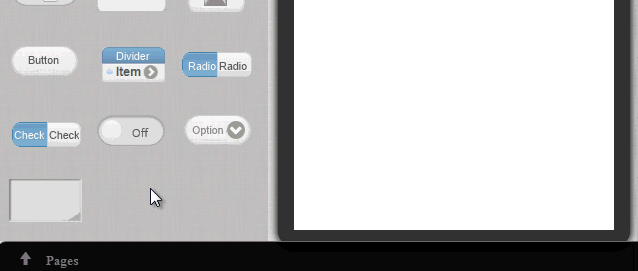
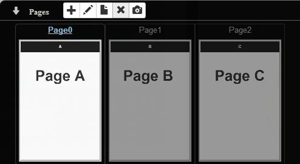
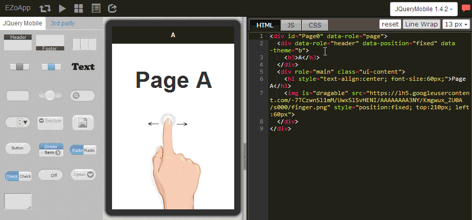

In terms of developing an app, the touch control using fingers is certainly the most important feature! However, for developers who are familiar with web page design tools such as HTML and CSS, the operating behaviors of a finger are very different from those of a mouse. Therefore, how to design hand gestures for hand-held devices becomes an important topic for developers.
Today we are all in luck! For EZoApp also provides the mechanism for switching pages using hand gestures. Users only need to write part of the JavaScript code in order to use hand gestures to switch between different pages and complete the design of the operational behaviors of an app. In addition, EZoApp uses the syntax of web pages, it therefore works on various hand-held device platforms. This is truly great news for designers and developers!
Do not worry if you are not familiar with JavaScript. We will provide related program code below. Just follow the example. Even if you are not familiar with JavaScript, you can still create fairly good products!
Link of example:
Integrating JavaScript in your app - page swiping
As the name suggests, page swipe means to swipe pages to the left or right using your fingers. Therefore, we must add new pages in order to execute the action of swiping. Here, we will use the adding new pages function provided by EZoApp. Just click on the black area of Pages at the bottom to open the Pages panel; click again will close it.
After the Pages panel is opened, you can see five icons at the top. They are Add Page, Rename Page, Duplicate Page, Remove Page, and Update Snapshot. Just click on the Add Page icon to add a new page.
After clicking on the Add Page icon, a window will pop up asking us to name the new page. You cannot give the new page a name that has been used before. Because the page name will be used as the id value in HTML, it cannot be a duplicate name.

In the same way, add three new pages. Give each of them a name and add some contents to make them differentiable from each other. (So you will know which page you are on.)
Only adding new pages is not enough to enable swiping. Next, we need to write the JavaScript code that will enable the page swiping action. The basic code for page swiping is provided below. Just copy and paste the code into the JS tab in the code editor, then click Preview and you are ready to swipe to the right or left! (Make sure that you type the name of the id correctly. Otherwise, the code will not execute successfully.)
var pages = ['Page0', 'Page1', 'Page2'];
$(document).on('pageinit', '#Page0', function () {
$(document).on("swiperight", function () {
var pageId = $.mobile.activePage.attr('id');
var idx = pages.indexOf(pageId);
idx = idx - 1 < 0 ? pages.length - 1 : idx - 1;
$.mobile.changePage('#' + pages[idx], {
'transition': 'slide',
'reverse': true
});
});
$(document).on("swipeleft", function () {
var pageId = $.mobile.activePage.attr('id');
var idx = pages.indexOf(pageId);
idx = ++idx % pages.length;
$.mobile.changePage('#' + pages[idx], {
'transition': 'slide'
});
});
});
That's it. We have easily created a simple swiping effect!
Link of example:
Integrating JavaScript in your app - page swiping